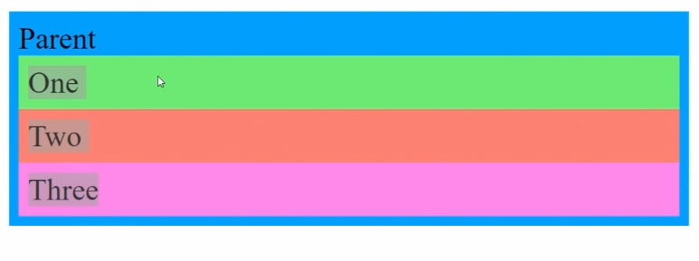
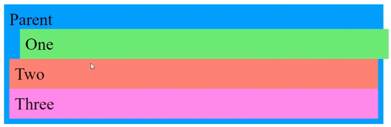
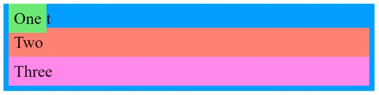
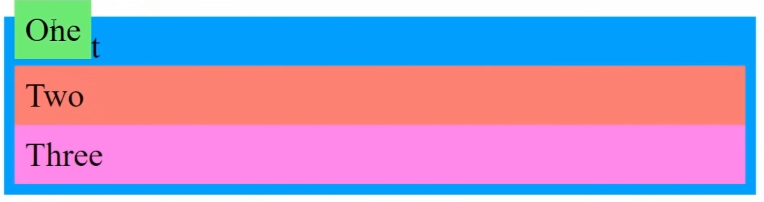

Technical Blog - CSS Concepts
Positioning in CSS
There are a few kinds of ways to position things in CSS. The mains ones are, static, relative, absolute, and fixed positioning. The different kinds of positioning influence how elements in an HTML file will be laid out in the document.
Static positioning
Static positioning is the simplelist deafault way an element is positioned in HTML. It forces other static, and relative elements to be placed next to it, rather than ontop, or overlapping it.

Relative positioning
Relative positioning acts in the same way as static positioning, accept when an element is relative, you can use properties like 'top, bottom, left right' to offset its position in the document. Any offset, relatively positioned elements will not be effect the position of any other elements in the document. This can lead to elements overlapping each other.
Absolute positioning
When an element's position is set to absolute, it will position itself relative to its closest relative parent, or the root of the document. You can offset an absolute element like you would a relative one.
Fixed Positioning
Fixed positioning is the same as absolute accept the element is positioned relative to the browser window.
